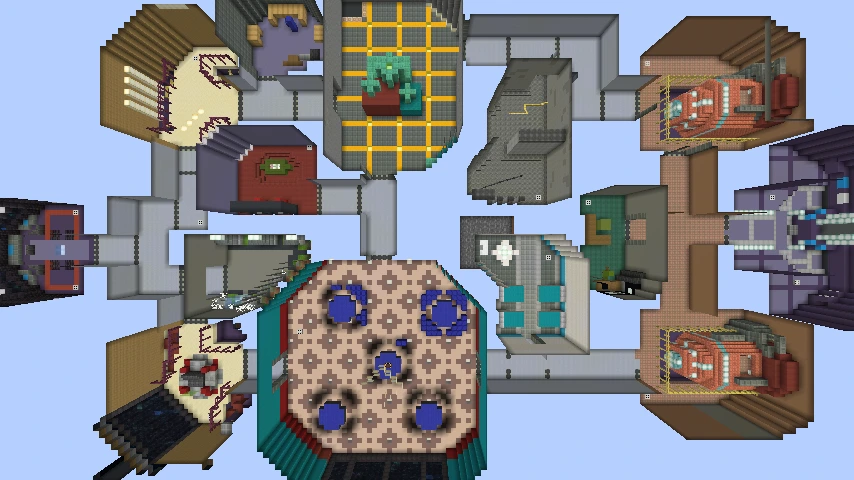

←
어몽어스

특징
맵 형태: 복잡한 구조
밴트
밴트의 최대 사용 가능 횟수는 3번이다
밴트를 이용하면 다른 방으로 이동 할 수 있다
긴급 소집 버튼
2분마다 사용 가능하며
버튼을 누르면 10초 뒤 버튼 근처 4군데에 랜덤으로 텔레포트된다
게임을 시작 할 때에는 30초뒤에 사용이 가능하다
발광 이후에는 1분마다 사용 가능하며 사용시 5초뒤에 텔레포트 된다
유리한 직업
?